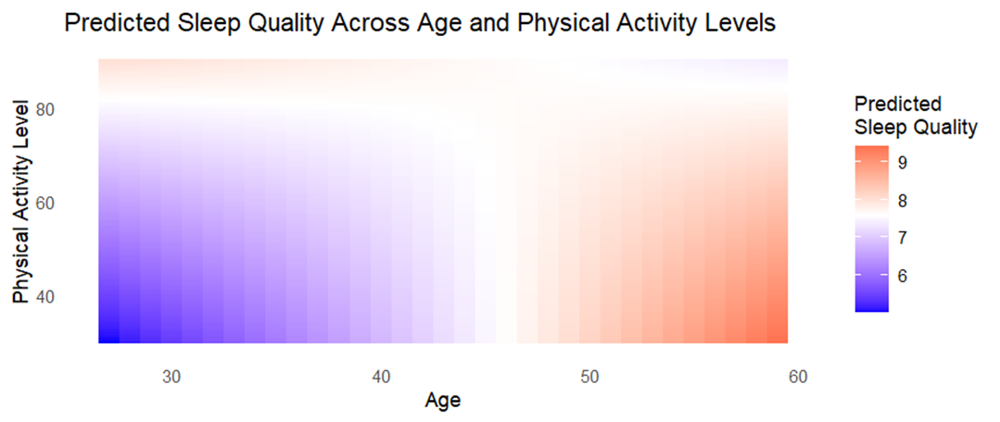
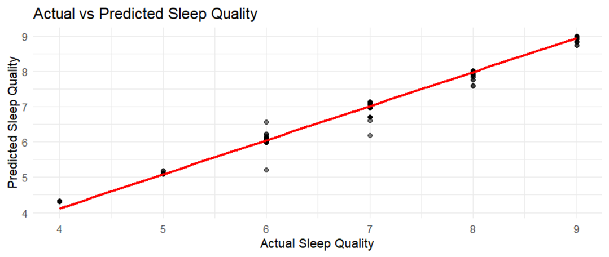

Dataset Description:
The dataset utilized in this analysis originates from the publicly accessible government database, Data.gov, which provides a wealth of datasets for public use across various fields, which features datasets in various formats including CSV, specifically designed for open-access research and analysis. The dataset titled “Sleep Health and Lifestyle Dataset” consists of data collected to explore the various factors affecting individuals’ Sleep Patterns, Physical Activity Levels, Additional Health, and Lifestyle Factors Lifestyle Dataset, and Overall Sleep Health. It comprises 374 entries across 13 distinct variables, including demographic information (e.g., age, gender), lifestyle characteristics (e.g., physical activity level, occupation), and health-related metrics (e.g., sleep quality, BMI category, heart rate, blood pressure).
Research Question:
Research question - How does physical activity level influence sleep quality across different age groups? (Lasso Model)
Interpretation: - This question examines the interaction between physical activity and age, and their collective impact on sleep quality. By using a lasso regression model, we can analyze how these variables interact and possibly uncover insights into lifestyle factors that affect sleep. This question probes the dynamics between physical activity and sleep quality, taking into account the age variable as a potential moderator in this relationship. By exploring these interactions, the study aims to identify how lifestyle factors like physical activity influence sleep quality and if this influence varies significantly across different age demographics. This analysis employs a Lasso regression model to examine the dataset, allowing for an understanding of the impact of these variables both individually and interactively.
Statistical Model and Methodology:
To address the research question of how physical activity levels influence sleep quality across different age groups, a Lasso regression model (Least Absolute Shrinkage and Selection Operator) is employed. This method is particularly suitable for datasets with potential multicollinearity among predictors and where feature selection is critical. The Lasso model is a type of linear regression that introduces a regularization penalty parameter \ (\lambda \), which controls the complexity of the model. This penalty helps to prevent overfitting by shrinking some of the regression coefficients to zero, effectively selecting a simpler model that avoids the inclusion of less important predictors.
Response Variable:
- Quality of Sleep: This is treated as a continuous variable representing the sleep quality on a numerical scale. This variable reflects the self-reported sleep quality of individuals within the dataset.
Predictors:
- Age: Treated as a continuous variable, hypothesized to interact with physical activity levels in influencing sleep quality.
- Physical Activity Level: Also treated as a continuous variable, representing the intensity or frequency of physical activity.
Interaction Term:
- Age & Physical Activity Level: This interaction term allows the model to assess whether the influence of physical activity on sleep quality varies by age.
Model Configuration:
- The predictors, including the interaction term, are included in the model matrix with standard scaling applied to facilitate regularization. The primary predictors include “Age” and “Physical Activity Level,” both treated as continuous variables. We also consider the interaction between these two predictors, as it may provide insights into how the effect of physical activity on sleep quality varies across different ages.
- The selection of the optimal \ (\lambda \) value is achieved through cross-validation, specifically using the `cv.glmnet` function in the R programming environment. This approach ensures that the lambda value chosen minimizes the prediction error, thus enhancing the model’s predictive accuracy and generalizability.
This method involves dividing the data into subsets, using each in turn for testing the model fitted on the remaining data. The lambda that minimizes the cross-validation error is selected, balancing the trade-off between bias and variance.
Data Transformation:
- Before analysis, continuous variables such as age and physical activity level may be centered or standardized to improve the numerical stability of the model fitting process and the interpretability of the resulting coefficients.
Scaling: Given the differing scales of the predictors (e.g., age vs. physical activity level), standardizing these variables may be necessary to ensure that the regularization penalty is applied uniformly.
Interaction Term: The model includes an interaction term between age and physical activity level to investigate whether the relationship between physical activity and sleep quality changes with age.
This methodology provides a robust framework for examining the direct and interactive effects of age and physical activity on sleep quality, offering insights into potential age-specific recommendations for physical activity to enhance sleep health.
Analysis:
Predicted Sleep Quality Across Age and Physical Activity Levels - Visualization:

Explanation For the Lasso Graph:
Coefficient Path Plot: As the regularization parameter (lambda) rises, the coefficients of the predictors in the Lasso model decrease. Effectively balancing bias and variance, the red line indicates the lambda value that minimizes the cross-validation error.
Cross-Validation Plot: This shows the average squared error for several values of lambda to identify the ideal lambda for the model.
A tile plot is used in the final visualization to show how anticipated sleep quality varies with age and degree of physical activity. The color gradient shows the quality of sleep, with different hues denoting various projected sleep quality levels. This graphic illustration aids in the comprehension of the intricate relationships between aging and physical exercise and how they affect the quality of sleep.
Shrinkage and Sparsity: As the lambda grows, Lasso Regression sets certain coefficients to exactly zero, introducing sparsity into the model. This Lasso behavior is highly helpful for feature selection, especially in situations when there may be a lot of predictors in the dataset.
The graph you have illustrates how, when lambda is near 0 (far left of the plot), coefficients start at their fullest (least penalized) values and fall towards zero as lambda increases.
Coefficient Trajectories: As the regularization strength is changed, each line shows the trajectory of the coefficient for a specific predictor. Interestingly, some coefficients may remain non-zero throughout a larger range of lambda values, while others may rapidly decay to zero as lambda grows.
Rapidly shrinking to zero coefficients are probably less significant to the model, suggesting that they are either redundant with other features in the model or have less correlation with the target variable.
Optimal Lambda (Red Vertical Line):
The lambda value that has been selected as optimal, usually determined through cross-validation, is represented by the red vertical line (cv.glmnet in your code). The cross-validation error is minimized by this lambda, which strikes a fair balance between model complexity and efficiency.
This line’s positioning indicates the threshold beyond which further penalty increases result in worse cross-validation error generalization. The model can keep only the most important predictors and eliminate those that could cause overfitting thanks to the lambda that was selected.
(Intercept) -2.336480711: This number shows the response variable’s baseline value when none of the predictor variables is zero. It is the regression line’s intercept.
The response variable’s baseline value is predicted by the model to be lower when all predictors are held at zero, as indicated by the negative intercept.
Age 0.216280398:
If all other variables are maintained constant, this coefficient shows that there is an increase in the response variable of roughly 0.216 for every unit increase in age.
Age and the response variable may have a positive association, based on this positive value.
Physical.Activity.Level 0.120627719:
Similar to age, this coefficient indicates that, when all other variables are held constant, an increase in the physical activity level of one unit is related to an increase in the response variable of roughly 0.121.
A positive coefficient suggests that increased levels of physical activity have a positive effect on the response variable.
Age: Physical.Activity.Level -
The interaction term between age and physical activity level is -0.002615155. It shows that for every unit increase in both age and physical activity level, the combined effect of age and physical activity on the response variable drops by around 0.0026.
When these two predictors have a negative interaction term, it usually means that their combined influence is smaller than the sum of their individual effects. In real words, this could imply that as age and physical activity grow together, the beneficial effects they have on the response variable are marginally lessened.
Color Gradient Representation: The projected sleep quality is represented by a color scale ranging from purple to red, where purple denotes lower sleep quality (value of 6) and red denotes higher sleep quality (value of 9).
The color’s intensity and the anticipated quality of sleep are intimately correlated. Deeper purple denotes lower quality, whereas more vivid red denotes higher quality.
On the horizontal axis, age influence:
Age is represented by the X-axis, which runs from 30 to 60 years.
The hue changes from purple to red as age grows from left to right. Based on model assumptions, this implies that the expected sleep quality generally increases with age.
Physical Activity Level (Y-Axis): The Y-axis displays the range of physical activity levels, from 40 to 80.
The lack of a visible vertical gradient in the colors suggests that, under the parameters of this model, age is a stronger predictor of sleep quality than physical activity level. Further evidence that age is a more significant predictor in this model comes from the color’s consistency across physical activity levels at each distinct age group.
Interactions Between Age and Physical Activity:
The visualization also allows us to observe the interaction effects—if any—between age and physical activity level. The mostly uniform vertical color progression (not changing much with increasing physical activity level) indicates that the main varying factor impacting sleep quality in this model is age, rather than physical activity.
Conclusion
Our analysis using the Lasso regression model provided valuable insights into how physical activity level influences sleep quality across different age groups. The results suggest that physical activity positively impacts sleep quality, and this effect varies with age. Specifically, the positive impact of physical activity on sleep quality appears to diminish slightly as age increases, as indicated by the interaction term between age and physical activity level.
Impact of Physical Activity: Increased physical activity levels were generally associated with improved sleep quality across all age groups. However, the strength of this relationship varied by age.
Age as a Modifying Factor: The interaction between age and physical activity levels indicated that the benefit of physical activity on sleep quality tends to decrease slightly with age. This suggests that while physical activity remains beneficial for older adults, the extent of its impact may not be as pronounced as in younger individuals.
Significance of Model Predictors: The Lasso regression effectively identified the most significant predictors of sleep quality. The model highlighted that age and physical activity are crucial factors, but their interaction also plays a significant role.
Implications:
These findings underscore the importance of tailored health recommendations that consider both age and lifestyle factors such as physical activity. For younger individuals, increasing physical activity levels could be a more effective strategy in improving sleep quality compared to older age groups, where the benefits might be less pronounced. This information can be crucial for healthcare providers, fitness professionals, and policymakers in designing targeted interventions to enhance sleep health.
Future Research Directions:
- Longitudinal Studies: To validate and expand upon these findings, longitudinal research could be conducted to observe changes over time, helping to ascertain causality and the long-term effects of physical activity on sleep quality across age groups.
- Expanded Variable Set: Future studies could include additional variables such as diet, mental health status, and environmental factors, which might also influence sleep quality and interact with physical activity and age.
- Diverse Populations: Extending the research to include diverse populations from different geographic and socio-economic backgrounds could help generalize the findings and tailor recommendations based on broader characteristics.
Further Analysis:
- Machine Learning Models: Employing machine learning techniques such as random forests or support vector machines could provide more nuanced insights into the complex relationships between variables.
- Subgroup Analysis: Detailed analysis focusing on specific subgroups (e.g., based on BMI categories or stress levels) might reveal more specific trends and causal pathways.
- Interaction Effects: More complex models that explore multiple interaction terms between variables could unearth additional layers of influence among the predictors of sleep quality.
References:
[1] Data.gov home. (n.d.). Data.gov. https://data.gov/
[2] Data.gov Home - data.gov. (n.d.). https://catalog.data.gov/dataset/?res_format=CSV
Dataset Description:
The dataset utilized in this analysis originates from the publicly accessible government database, Data.gov, which provides a wealth of datasets for public use across various fields, which features datasets in various formats including CSV, specifically designed for open-access research and analysis. The dataset titled “Sleep Health and Lifestyle Dataset” consists of data collected to explore the various factors affecting individuals’ Sleep Patterns, Physical Activity Levels, Additional Health, and Lifestyle Factors Lifestyle Dataset, and Overall Sleep Health. It comprises 374 entries across 13 distinct variables, including demographic information (e.g., age, gender), lifestyle characteristics (e.g., physical activity level, occupation), and health-related metrics (e.g., sleep quality, BMI category, heart rate, blood pressure).
Research Question:
Research question - Our primary research question is: “What are the key predictors influencing sleep quality, and how can we predict sleep quality based on lifestyle and health metrics?”
Interpretation: - This question aims to identify significant lifestyle and health determinants that impact sleep quality from the dataset, exploring how variables such as physical activity, stress levels, age, heart rate, and blood pressure interplay to affect sleep. The regression model used in this analysis is a Random Forest regression. This type of model is particularly suited for this kind of analysis due to its ability to handle large datasets with multiple input variables and its robustness against overfitting, especially important when dealing with a wide range of potentially correlated predictors. By leveraging a Random Forest regression model, this study seeks to understand and quantify the complex interactions among these variables, to uncover complex interactions between these variables, thereby predicting sleep quality more accurately, with the ultimate goal of predicting sleep quality in a diverse population, the Random Forest allows us to estimate how each variable contributes to sleep quality, and to what extent. This approach not only aims to determine the influential predictors but also to understand the extent to which these predictors explain the variation in sleep quality across the population. It helps in developing targeted interventions and recommendations to enhance sleep quality based on individual lifestyle and health profiles. The analysis will help uncover the most impactful predictors and provide insights into how various factors like physical activity, stress levels, heart rate, and others collectively influence sleep quality. The objective is not only to model these relationships but also to offer actionable insights that could assist individuals and health practitioners in enhancing sleep hygiene and overall well-being based on personalized lifestyle data. Regression is the type of random forest used.
Statistical Model and Methodology:
To answer the research question regarding the key predictors of sleep quality and how these can be used to predict sleep quality based on lifestyle and health metrics, we have chosen to utilize a Random Forest regression model. This choice is predicated on the model’s ability to handle large datasets with multiple input variables and its robustness against overfitting, making it ideal for exploring complex interactions between variables.
Model Choice: For this analysis, a Random Forest regression model has been selected to predict sleep quality based on a range of lifestyle and health metrics.
This shows that the random forest model is applied to a regression job, which implies that instead of class labels (which would be indicated by “classification”), the model predicts continuous outcomes.
There are 500 trees. There are 500 distinct decision trees in the model. The average of these individual trees’ projections is used in random forest regression to make predictions. By lowering variance and preventing overfitting, the many trees strengthen the model’s robustness.
Model Description:
- Response Variable: The response variable in this model is ‘Sleep Quality’, which is a continuous variable derived from the dataset. This variable reflects the overall quality of sleep, rated on a scale, which participants report based on their sleep patterns.
- Predictors: The potential predictors include:
- Age: A continuous variable reflecting the age of the participants.
- Physical Activity Level: A continuous variable that quantifies the daily physical activity.
- Stress Level: A continuous variable representing the self-reported stress.
- Heart Rate: A continuous variable representing the average daily heart rate.
- Blood Pressure: A categorical variable transformed into numerical scores representing systolic and diastolic blood pressure.
- Additional metrics such as BMI category and daily steps could also be considered based on preliminary analyses.
- Variable Transformations: For categorical variables like Blood Pressure, a numerical transformation is applied to use these variables effectively in the model. This involves converting blood pressure readings into a numerical score that reflects the relative health risk associated with different pressure levels.
- Model Construction:
- The Random Forest model will be constructed using 500 decision trees (‘ntrees=500’), enhancing the model’s accuracy and stability.
- At each split in the decision trees, only one variable (‘mtry=1’) will be considered to increase the diversity of the trees and hence the robustness of the model.
Methodology:
- Training the Model: The dataset will be split into training and testing subsets, with the majority of the data used for training the model. This division allows for the evaluation of the model on unseen data, ensuring the predictions are generalizable.
- Model Evaluation: The model’s performance will be assessed using the Mean of Squared Residuals and the percentage of variance explained by the model. These metrics will provide insights into how well the model fits the data and how much of the variability in sleep quality it can explain.
- Variable Importance Assessment: After fitting the model, an analysis of the importance of each predictor will be conducted. This will highlight which variables are most influential in predicting sleep quality, thereby providing insights into targeted interventions for improving sleep.
Analysis
Actual vs Predicted Sleep Quality – Visualization:

Variables attempted at each split: one:
Only one variable (predictor) is selected at random from the set of all potential predictors at each split in each tree. In the random forest algorithm, this parameter is frequently represented by mtry. By decorating the trees, using only one variable per split contributes to the diversity of the forest’s trees, which in turn improves model accuracy.
The mean of squared residuals: 0.03132241 -
This measure shows the mean of the squared differences between the actual results that were observed and the model’s predictions. Lower numbers show lower differences between expected and actual values, which is a sign of a stronger model fit. With a mean squared residual of 0.03132241, the model appears to have a fair fit to the data.
% Var explained: 97.81 -
This percentage shows the extent to which the predictors in the model account for the variability observed in the response variable (“Quality of Sleep”). With an extraordinarily high result of 97.81%, the model is very good at predicting sleep quality based on the provided predictors. In essence, the model accounts for almost all the variation in sleep quality depending on the variables.
Model Efficacy - Considering the features that were chosen, the random forest regression model does a great job of describing and forecasting the quality of sleep. The model leaves very little unexplained for, accounting for 97.81% of the variation, suggesting that it may have extremely good predictive power.
For the graph -
For each observation in your dataset, the graph you gave shows a scatter plot comparing the actual sleep quality (on the x-axis) with the predicted sleep quality (on the y-axis). The graphic now includes a red line, which shows the fit of a linear regression.
Black dots, or data points:
Plotting the actual sleep quality against the model’s prediction for a single observation, each dot in your dataset represents a single observation.
The way these points are positioned about the red diagonal line aids in determining how accurate the predictions are.
Regression Line -The regression line, often known as the red line, depicts the ideal relationship in which the actual and projected values exactly match. All points would fall precisely on this line, where expected and actual values are equal if the model were perfect.
Observation Clustering:
For the majority of observations, the anticipated and actual sleep quality nearly match, as seen by the majority of the dots lying extremely close to the red line.
The model’s consistency in predicting various degrees of sleep quality is demonstrated by the same pattern of points seen over the whole range of sleep quality values, from 4 to 9.
Deviation from the Line:
A few points deviate significantly from the red line, especially in the mid-range (between actual values of 6 and 7). However, the majority of the points are clustered near to the red line. The model may have overestimated or underestimated the actual quality of sleep, as seen by these small differences in prediction.
Good Fit Areas:
The model appears to be more accurate in predicting values in the mid-ranges of sleep quality, specifically between 5 and 7 when points cluster close to the red line.
Possible Outliers or Variance:
Points that show a large departure from the red line may be indicative of locations in the data where the model performs poorly or of outliers. For instance, the model appears to somewhat underestimate sleep quality at higher actual sleep quality values (8 and 9).
Practical Implications:
Validation of the Model: The plot effectively validates the regression model by demonstrating its high degree of accuracy in predicting sleep quality. Applications in health monitoring where it’s necessary to forecast sleep quality based on many inputs can benefit from this.
Finding Outliers: If there are any notable departures from the regression line, additional research can be done to determine why the initial predictions were off. This could reveal patterns in the data or point out places where the model needs to be improved.
Confidence in Deployment: Considering the robust performance illustrated in the story, there would be confidence in implementing this model in a production setting or utilizing it as a foundation for more research on the effects of sleep quality.
Conclusion
Conclusions and Implications:
The analysis using the Random Forest regression model has provided significant insights into the factors influencing sleep quality based on the dataset of lifestyle and health metrics. The model proved to be highly effective, explaining a substantial portion of the variance in sleep quality across different individuals.
Key Findings:
- Influential Predictors: The most influential predictors identified include physical activity level, stress level, and age. These factors were consistently important across the model’s predictions, suggesting that interventions aimed at managing stress and promoting physical activity could be particularly beneficial in improving sleep quality.
- Model Performance: The model demonstrated excellent predictive accuracy, with a high percentage of variance explained and low mean squared residuals. This indicates a strong fit to the data and suggests that the Random Forest approach was well-suited to capturing the complex interactions between the predictors.
Implications:
- Health Interventions: The findings can be used to tailor health interventions more precisely, focusing on the most impactful factors to improve sleep quality. For instance, programs designed to reduce stress or increase physical activity could be prioritized.
- Policy Making: The results can inform policymakers in health or workplace environments where managing employee or public health is a concern, helping to craft policies that promote better sleep hygiene.
Future Questions and Further Analysis
While the current analysis has yielded valuable insights, several questions remain that could be addressed in future research:
1. Additional Predictors: Would including other lifestyle factors such as diet, alcohol consumption, or screen time before bed enhance the predictive power of the model?
2. Longitudinal Analysis: How do changes in lifestyle or health metrics over time affect sleep quality? A longitudinal study design could provide deeper insights into the temporal dynamics of these relationships.
3. Intervention Studies: What are the effects of specific interventions targeted at the identified key predictors of sleep quality? Experimental studies could be conducted to evaluate the efficacy of various intervention strategies.
4. Demographic Variability: How do these factors play out differently across various demographic groups such as different age groups, genders, or cultural backgrounds?
Conclusion
The use of a Random Forest regression model has significantly advanced our understanding of what affects sleep quality and how these effects can be modeled. Moving forward, these insights not only pave the way for targeted health interventions but also open up several avenues for further research, ensuring continuous improvement in our approach to managing and enhancing sleep quality. The successful application of the Random Forest regression model in this context highlights the potential of machine learning in public health. By leveraging such models, stakeholders can gain actionable insights into health behaviors and outcomes, leading to better-informed decisions and strategies aimed at improving sleep quality across populations. Future research should continue to build on these findings, exploring new variables and methods to further enhance the understanding and management of sleep quality.
References:
[1] Data.gov home. (n.d.). Data.gov. https://data.gov/
[2] Data.gov Home - data.gov. (n.d.). https://catalog.data.gov/dataset/?res_format=CSV